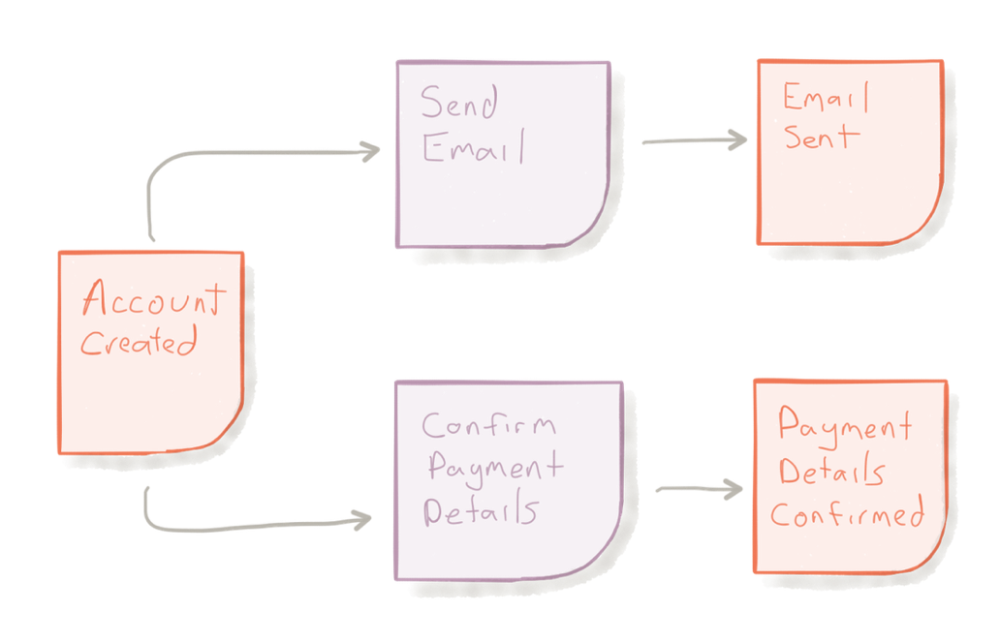
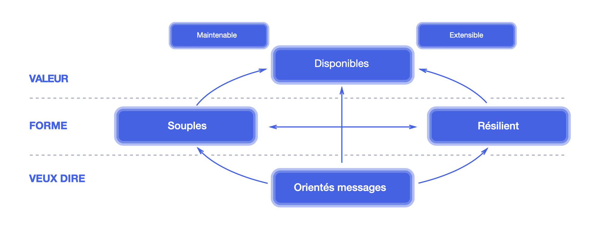
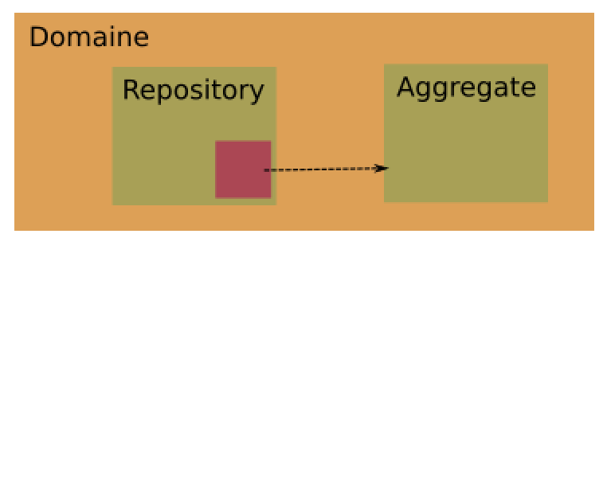
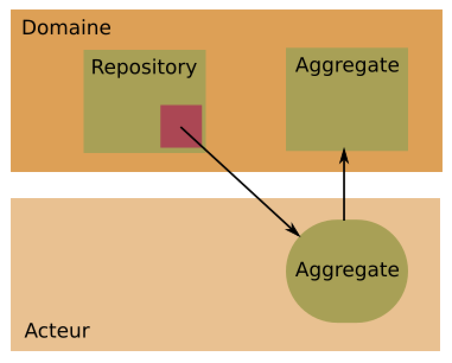
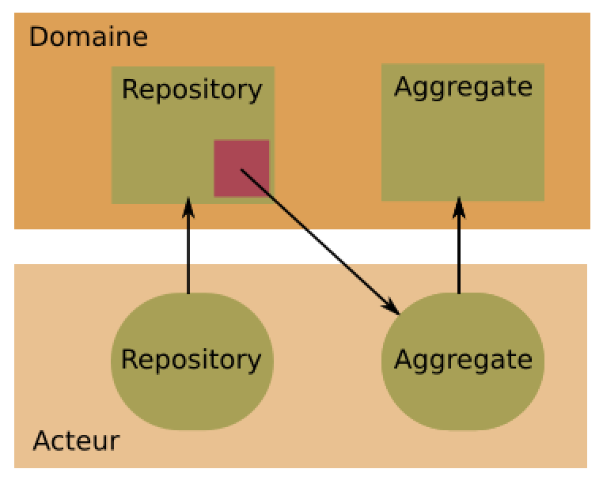
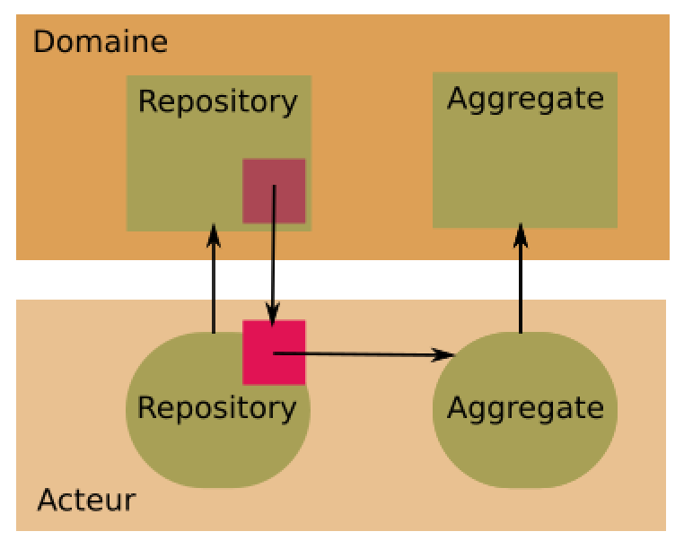
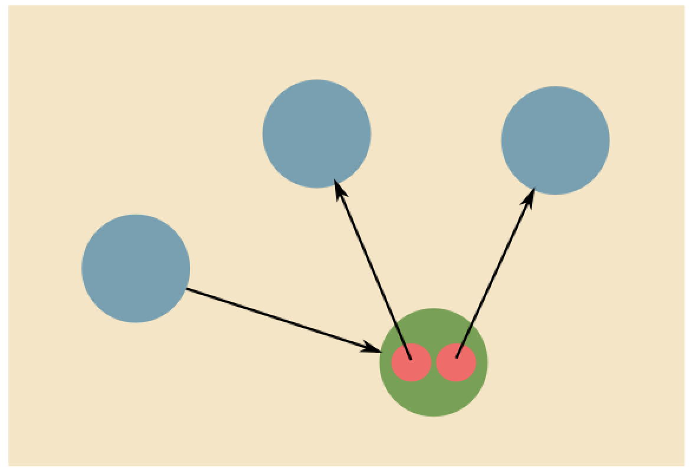
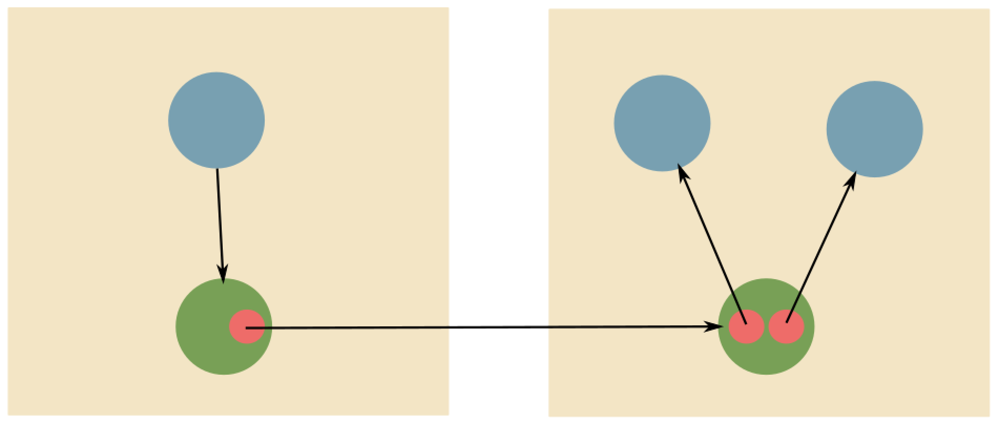

Modélisation de Domaine et
le modèle Acteur
 Didier Plaindoux (@dplaindoux)
Didier Plaindoux (@dplaindoux)
Crédits
Alessio Coltellacci (@lightplay8)
Mise au point
Domain Driven Development
Approche pour le développement
d'applications complexes
Domain Driven Development
- Focus sur le domaine principal
- Collaboration entre experts (domaine et logiciel)
- Determination d'un lexique par context
Ubiquitous Language
Champ lexical partagé
Bounded Context
Périmètre induit par un champ lexical
Value Object
Objet (immutable) défini par ses données
Value Object :: Illustration
case class Money(amount:Int) {
def plus(money: Money): Money = Money(amount + money.amount)
}
case class OrderLine(orderCost: Money) {
def cost(): Money = orderCost
}
Entity
Objet défini par son identité,
ayant un cycle de vie et un état associé.
Identité → Etat + Comportement
Entity :: Illustration
class Order(val id: OrderId, var orderLines: List[OrderLine], var cost: Money) {
def totalCost(): Money = cost
def addOrderLine(orderLine: OrderLine): Unit = {
orderLines = orderLines :+ orderLine
cost = cost.plus(orderLine.cost())
}
}
Aggregate
Ensemble d'entités en cohésion
Aggregate Root
Portée de la cohérence et de la persistance
Repository
Asbtraire le stockage et la récupération des Aggregate Root
Domain Event
Quelque chose qui s'est passé dans le domaine.
Event Storming
Atelier pour une exploration rapide
d'un domaine métier
Evénement ↝ Commande(s)
Couplage faible
Event-Driven Architecture
- Event notification
- Event-Carried State Transfer
- Event Sourcing
- CQRS
Système Réactif
Orientés messages
Utilisation des messages asynchrones
Message ≢ Evénement
Questions ?
Le modèle Acteur
"A Universal Modular ACTOR Formalism for Artificial Intelligence" - Carl Hewitt, Peter Bishop et Richard Steiger
Modèle pour le calcul concurrent et distribué
Modèle pour le calcul concurrent et distribué
Executions "simultanées" dans un même programme
Calcul concurrent disjoint
Aucune interaction
Calcul concurrent compétitif
Accès à des ressources partagées
Mutex, Sémaphore, Spinlock, ...
Calcul concurrent coopératif
Echange d'information
IPC, Channel
Communicating sequential processes (CSP) - Hoare
Modèle pour le calcul concurrent et distribué
Modèle pour le calcul concurrent et distribué
Executions sur plusieurs unités de calcul
coordonnées par envoie de messages
Π-Calculus - Milner
Anatomie d'un Acteur
Physiologie d'un Acteur
The isolated Turn principle
- Un acteur traite les messages de sa B.A.L.
- Traitement unique et isolé à un instant t
- Thread Safe et sans dead-lock bas niveau
Axiomes
- Créer un nouvel acteur
- Changer de comportement
- Communiquer avec un acteur
Communication
Interaction avec un acteur par
envoie de message via une référence
Concurrence coopérative
Message
Immutable
Délivré au plus une fois
Référence d'acteur
Existence globale
Transparence de l'emplacement
Partageable / Communicable
Système Acteur
Grappes interconnectées
Distribution et Référence d'acteur
Acteur :: Exemple
case object TryConsume // i.e. Interface
class Energy(value: Int)(region: ActorRef) extends Actor {
def receive: Receive = {
case TryConsume =>
sender ! Consumed(value)
region ! Destroy(self)
context become consumed
}
def consumed: Receive = {
case _ => ()
}
}
"Actor, an elegant model for concurrent and distributed computation"
Questions ?
Domaine et Acteur
Soupe acteur

Soupe acteur

Emergence de l'asynchrone !
Soupe acteur

Emergence de l'asynchrone !
Soupe acteur

Emergence de l'asynchrone !
Aggregate Root → Acteur
case class AddOrderLine(orderLine: OrderLine)
case object GetTotalCost
case object AddedOrderLine
case class TotalCost(money: Money)
case class OrderLineModified(who: ActorRef)
class OrderActor(broker: ActorRef, order: Order) extends Actor {
override def receive: Receive = {
case GetTotalCost => sender ! OrderCost(order.cost())
case AddOrderLine(line) => order.addOrderLine(line)
broker ! OrderLineModified(self)
sender ! AddedOrderLine
}
}
L'agrégat est protégé i.e Thread Safe
"Event-Driven"
Publication / Souscription (PubSub)
Utilisation naturelle des Acteurs
Domain Event ↝ Message
PubSub
Passage à l'echelle
Cluster & Distribution des Acteurs
PubSub généralisé
Bus d'événements
Haute performance (Kafka, RabbitMQ etc.)
Microservices
"Loosely coupled service oriented architecture with bounded contexts" - Adrian Cockcroft
Quelques Références
"DDD and Microservices: At Last, Some Boundaries!" - E. Evans
"Designing Reactive Systems with Event Storming" - L. Huehnken
"Reactive Microservices with DDD and Actors" - V. Vernon